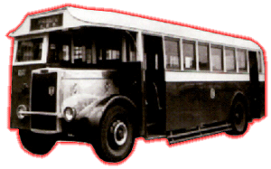

Tilling-Stevsns
-
K5LA7
 |
引擎 Engine 容積 Engine Capacity 波箱 Gearbox 車身 Body Build 體積 Volume 載客量 Passenger 服役年份 Year |
: Gardner 5LW (95bhp) : 不詳 : David Brown (5-Speed), Constant Mesh : CMB : 8382L X 2286W X 2997H (mm) : 52 : 1948 - 1967 |
Tilling Stevens [白水箱] K5LA7 乃是長軸距版本，中巴一口氣訂購 52 部之多，創出此車廠商最大訂單之記錄。白水箱的車身都是由中巴自行組裝而成，它采用了上下移動式車窗 (像電車那款一樣)，車箱內更設頭、二等的位置。直至一九七五年中巴替其中一部白水箱進行重建及翻新，而且配上新車牌 HK104，結果，這部車便成為全港首部古董巴士流傳至今時今日，依然健步如飛，出席一些記念活動。